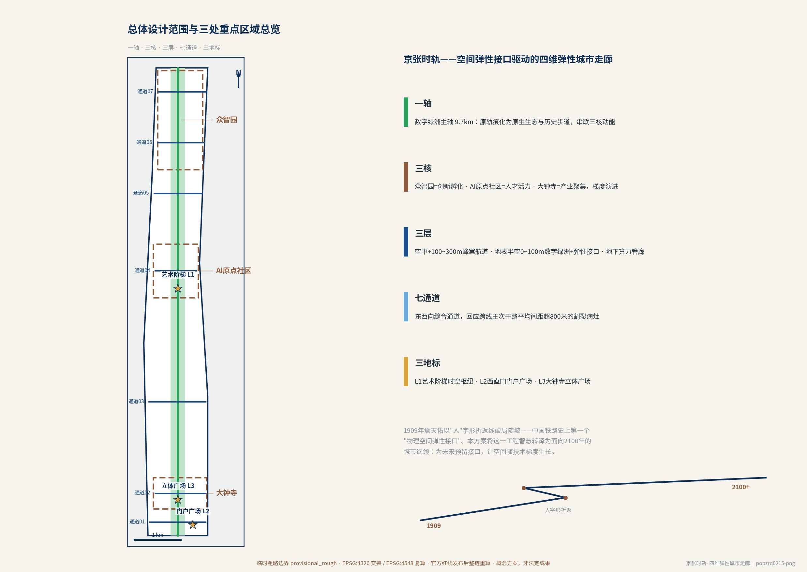
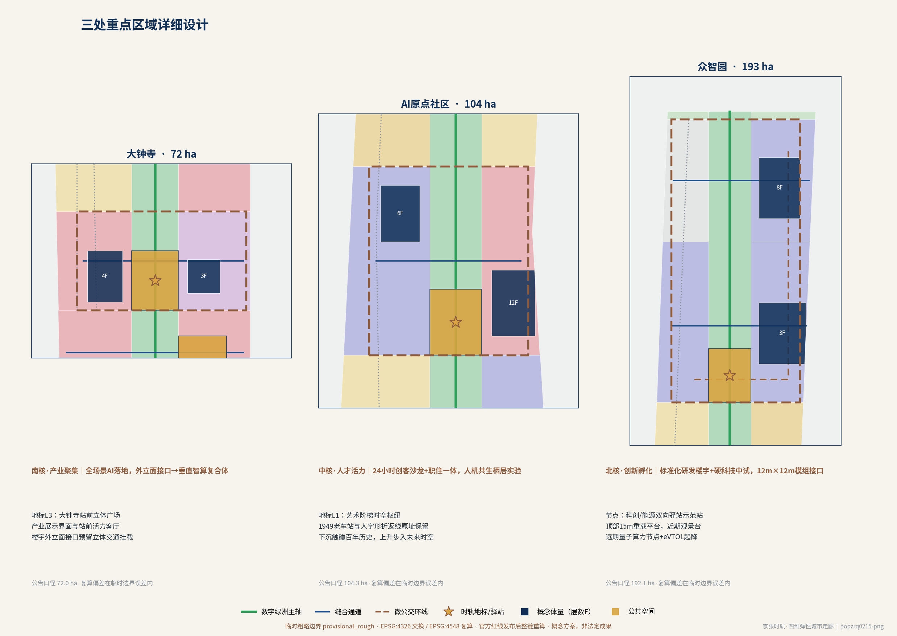
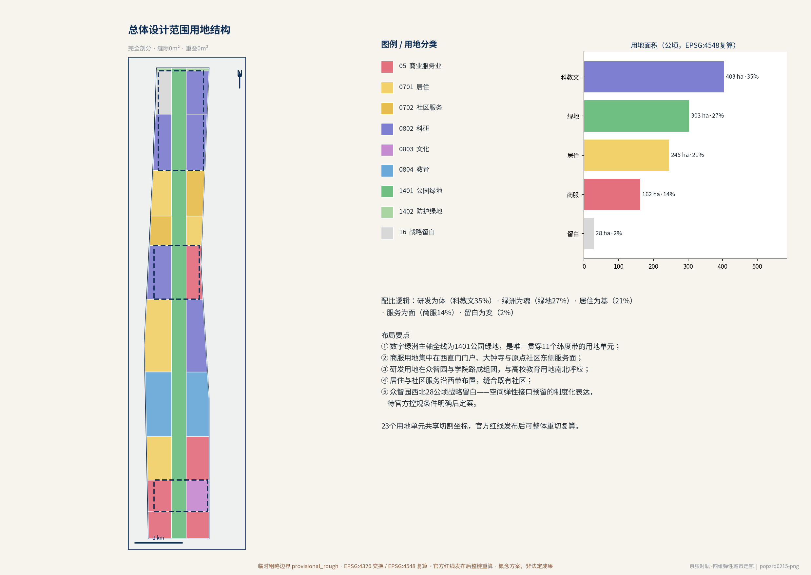
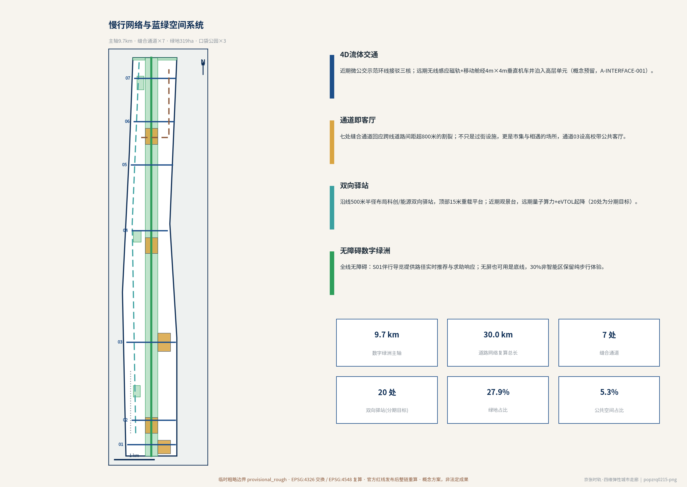
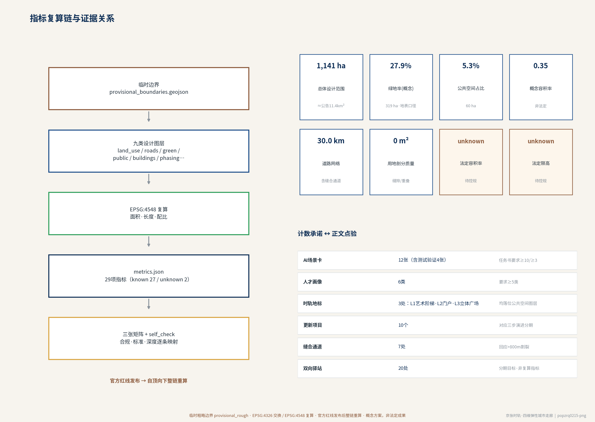

总览地图 · 一轴三核三层
1909 年詹天佑的"人"字形折返线是中国铁路史上第一个"物理空间弹性接口"；2026 年高铁入地后，9 公里地表轨痕演变为串联三大核心集群的创新轴线。方案以"空间弹性接口"为核心技术哲学，在 1909—2100 的两百年坐标系中，把物理疤痕转化为"超级城市智脊"。

总览地图：一轴串联动能，三核梯度演进；七处缝合通道回应跨线道路平均间距超 800 米的割裂病灶。
三维分层：空中层（+100~300m）低空示范航线→蜂窝航道与数字音波屏障；地表半空层（0~100m）数字绿洲+吊挂锁扣/高空转换平台等弹性接口；地下数字层（0m以下）原高铁隧道数据中心与 2.5m×2.5m 弹性舱段→磁悬浮物流。
三层范围工作框架
| 层级 | 范围 | 本包工作深度 |
|---|
| 统筹研究范围 | 北五环—西直门外大街约 43.6 km²（公告文字四至，不落图） | 产业与未来城市研究、趋势诊断 |
| 总体设计范围 | 遗址公园沿线约 11.4 km²，临时边界复算 11,412,825.386 m² | 控规深度城市设计：用地、交通、蓝绿、体量、分期 |
| 重点区域 | 众智园 192.1 ha · 原点社区 104.3 ha · 大钟寺 72 ha（公告口径） | 详细城市设计与弹性接口落位 |
临时边界声明：官方红线尚未发布，本包几何来自仓库登记的临时粗略多边形（provisional_rough），仅用于方案生成、自检、可视化与评审讨论；官方红线发布后须整链重算（假设 A-BOUNDARY-001）。
重点区域详细设计

北核众智园=创新孵化（12m×12m 模组接口）· 中核原点社区=人才活力（24小时创客沙龙+职住一体）· 南核大钟寺=产业聚集（外立面接口→垂直智算复合体）。
清华园"艺术阶梯"时空枢纽（时轨地标 L1）
1949 年清华园老车站与人字形折返线原址保留；近期架设内置管线与结构接口的景观步道通往高架观景平台，远期免拆扩建为低空起降平台与 AI 大脑发布中心——"下沉触碰百年历史，上升步入未来时空"（文保边界待补齐，A-HERITAGE-001）。
用地分区与建筑规模

23 个用地单元完全剖分（缝隙 0m²、重叠 0m²）：科教文 35.3%、绿地 26.6%、居住 21.5%、商服 14.2%、战略留白 2.5%。
建筑（概念示范）：七处概念体量基底约 65.5 ha、概念总建筑规模约 397.4 万 m²、概念容积率 0.348，均预埋空间弹性接口（12m×12m 模组接口、4m×4m 垂直机车井），非法定控制值（A-CONTROLS-001）。拆改留以留为主：轨痕与 12 处历史遗存全部保留。
交通慢行 · 4D 流体立体交通

数字绿洲慢行主轴 9.7km · 七处缝合通道 · 低速无人微公交示范环线 · 科创/能源双向驿站示范站（顶部 15m 重载平台）。
近期微公交示范环线接驳三核；远期地面接口激活无线感应磁轨，移动舱经建筑内 4m×4m 垂直机车井泊入高层单元；沿线 500m 半径布局 20 处双向驿站（分期目标），近期观景台、远期量子算力节点+eVTOL 垂直起降场（全部工程参数为概念预留值，A-INTERFACE-001）。路网复算总长 29.96 km。
蓝绿公共空间 · 数字绿洲与伦理红线
27.9%设计绿地率（地表口径）
318.7 ha绿地复算面积
5.29%公共空间占比
3 处时轨地标（L1/L2/L3）
原轨痕化为连绵的原生生态与历史步道；三处时轨地标——L1 艺术阶梯、L2 西直门门户广场、L3 大钟寺立体广场——均落位公共空间图层。
30% 绝对非智能区（伦理红线）：强制保留地表 30% 只留泥土、水系与百年铁轨的非智能区，作为锚固人类情感的永恒空间弹性接口与对抗科技异化的压舱石（治理承诺目标，A-NONSMART-001）。远期"绿化率≥65%、空间效率+300%"为 2070–2100+ 情景目标（A-AOD-001），与本包复算绿地率口径不同。
AI 场景 · 12 张场景卡与 6 类画像
面向硬科技创业者、高校研究者、青年创客、产业工程师、社区居民（含银发群体）、文化访客六类画像；全部场景设人工复核与退出机制（A-SCENARIO-001）。▲ 为产业测试验证场景（4 张）。
S01 数字绿洲伴行导览体12 处历史遗存连续叙事，AI 伴行讲解
地表层 · 一期
S02 缝合通道智能过街调度行人优先自适应信号
七处通道 · 一期
S03 无人微公交环线运营L4 微循环接驳三核
示范环线 · 一期
S04 ▲低空无人物流示范航线需民航空管许可（A-INTERFACE-001）
空中层 +100~300m · 一期试点
S05 驿站能源双向调度高压快充与削峰填谷
20 驿站 · 一二期
S06 ▲模组化接口装配数字孪生楼宇扩展装配预演
12m×12m 接口 · 二期
S07 企业服务智能体enterprise-service-copilot 全场景落地
大钟寺 · 一期
S08 创客沙龙 AI 协作平台24 小时跨团队协作
原点社区 · 一期
S09 ▲职住舱智能切换模拟白天办公舱/夜间居住舱（目标情景，A-AOD-001）
AOD · 二三期
S10 ▲算力管廊与磁悬浮舱段预检2.5m×2.5m 舱段免破土接入预演
地下层 · 二期
S11 公共安全与低空运行复核public-safety-operations-review
全层位 · 一二期
S12 非智能区生态哨兵30% 非智能区外围被动监测
地表层边界 · 一期
更新项目与三步演进
| 项目 | 内容 | 阶段 |
|---|
| R01 数字绿洲主轴贯通 | 轨痕生态修复与历史步道 | 一期 |
| R02 艺术阶梯时空枢纽一期 | 老车站修缮+景观步道+观景平台 | 一期 |
| R03 七处缝合通道近期工程 | 无障碍过街与桥下空间激活 | 一期 |
| R04 众智园研发楼宇与中试基地 | 12m×12m 接口预埋 | 一期 |
| R05 原点社区创客沙龙与青年社区 | 24 小时创客沙龙、职住一体 | 一期 |
| R06 大钟寺消费枢纽与展示馆 | 智能终端与内容消费、产业展示 | 一期 |
| R07 驿站示范站与微公交环线 | 15m 重载平台+快充接口 | 一二期 |
| R08 地下算力管廊与数据中心 | 2.5m×2.5m 弹性舱段预留 | 一二期 |
| R09 低空示范航道与音波屏障 | 民航空管许可前提 | 二期 |
| R10 智慧矩阵悬浮模组示范 | 首个挂载单元技术验证 | 二三期 |
一 · 文脉固本（2026–2035）
覆盖约 606.3 ha：抢救性保护遗存、贯通慢行主轴、三核近期实体建设、全面预埋弹性接口。
二 · 三维重构（2035–2070）
覆盖约 263.7 ha：激活预留接口，挂载智慧矩阵悬浮模组，普及无人移动舱与低空通勤。
三 · 生境闭环（2070–2100+）
覆盖约 271.3 ha：AI 调度下空间自新陈代谢，形成自我演化的数字绿洲。
核心指标 · 复算链

临时边界 → 九类设计图层 → EPSG:4548 复算 → metrics.json（29 项，known 27 / unknown 2）→ 三张矩阵 + 自检。
1,141.3 ha总体设计范围（复算）
27.9%设计绿地率
5.29%公共空间占比
0.348概念容积率（非法定）
30.0 km路网复算总长
0 m²用地剖分缝隙/重叠
unknown法定容积率（待控规）
unknown法定限高（待控规）
计数承诺：场景卡 12（测试验证 4）· 画像 6 · 时轨地标 3 · 更新项目 10 · 缝合通道 7。全部 known 指标公式与置信度见 metrics.json。
任务覆盖 · 自检状态
- 任务覆盖：compliance_matrix.json 覆盖公告 1.3/1.4/1.5 与 agent.1–agent.6 全部必做任务（23 项）；standard_matrix.json 覆盖 6 项标准；design_depth_matrix.json 覆盖 15 项设计深度条目。
- 自检状态：见 self_check.json（由 scripts/self_check_submission.py 生成，含逐项检查结果与包状态）。
- 格式：proposal_format_version 2 · 双语（proposal.md / proposal.en.md）· GeoJSON 交换 EPSG:4326 / 面积复算 EPSG:4548。
来源与假设登记
来源（14 项，sources.json）
征集公告（第一依据）· 智能体任务书 · 机器可读资料包 · 来源登记表 · 阅读导航层 · 临时边界与重点区多边形 · 城市设计管理办法 · 控规编制审批办法 · 用地用海分类指南 · 生成式AI服务管理暂行办法 · 无障碍环境建设法 · 智慧助老政策 · 京张铁路公开史实（背景）。
假设（9 项，assumptions.json）
| 编号 | 假设 |
|---|
| A-BOUNDARY-001 | 临时边界替代官方红线；红线发布后整链重算 |
| A-CONTROLS-001 | 法定容积率/限高缺失，概念值非法定控制 |
| A-EXISTING-001 | 现状建筑与权属数据缺失，拆改留为方向性结论 |
| A-TRANSPORT-001 | 轨道与道路红线未获得，通道形式待定 |
| A-HERITAGE-001 | 文保边界未获得，不构成对文保本体改造承诺 |
| A-SCENARIO-001 | AI 场景运行参数为设计目标值，设人工复核与退出机制 |
| A-AOD-001 | "+300% 效率 / ≥65% 绿化"为 2070–2100+ 情景目标，非复算指标 |
| A-INTERFACE-001 | 全部弹性接口工程参数为概念预留值；低空航线须民航空管许可 |
| A-NONSMART-001 | 30% 绝对非智能区为治理承诺目标，边界待官方资料落图 |